When considering, producing avlog without showing your face you can go for many types of videos such as tutorials, unboxing, product demonstrations, screenshares, gaming videos, product reviews, podcasts or filming live events.You can even go with your screen recordings that can be anything from software lessons or how-to discussion group. You can also leverage software like Camtasia, VideoScribe or PowToon to make videos that on no occasion necessitate you to be on camera.
YouTube is an incredible & extraordinary opportunity for video production & distribution, allowing you to build a fan base, market a product/service and even earn a full-time living.
Everyday people watch one billion hours of video on YT and generate billions of views (YouTube Press, 2019)
According to YouTube Press, the number of channels earning six figures per year on this platform grew more than 40% y/y & earning in five figures per year grew more than 50% y/y. Moreover, the number of channels with more than one million subscribers grew by more than 65% y/y.
In fact, many YouTubers earn more than celebrities and professional athletes.Therefore, it’s easy to understand why the idea of starting a Youtube channel is so tempting.
Though, you may still dream to have one, would never start a YT channel because of several reasons.
Contents
- 1. Are you a camera-shy personality?
- 2. Top Youtube channel ideas without showing your face 2021.
- 3. Tutorials
- 4. Customer Testimonials and reviews
- 5. Screen Recordings
- 6. Gaming Videos
- 7. Animation
- 8. Presentations
- 9. Product demonstrations
- 10. Inventory
- 11. Live commentary for an event
- 12. Podcast
- 13. Cooking
- 14. Camtasia Studio
- 15. Text to Speech
- 16. Whiteboard Animation
Are you a camera-shy personality?
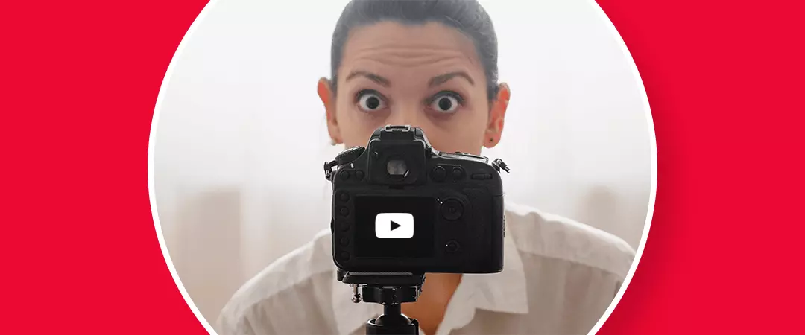
Some creators may desire to avoid being featured or filmed in their videos. It is common for individuals who might be camera-shy, valuing personal privacyor just ignore it for no big reason, or as a result of social apprehension, public self-consciousness, crippling anxiety, low assertiveness, introversion, you are not familiar with cohesive editing or don’t have enough money to invest in the equipment needed.In fact, the fears are real and admissible sometimes.
What may be the reason is you can still go passionately for blogging without showing your face to share your expertise, skills, talent and cognitions creating impressive, amazing & highly sought out treasured content while narrating to add value!
But If you are even anxious about sharing your voice, maybe because of the accent or harshness, you have many texts to speech software called tts software to be used to help with.
And you will be happy to know, that there are, many successful YouTubers who do not show their face in videos at all!
You have landed on the best page, if you want to know, how to make a vlog without showing your face.
Creating highly valuable & effectivevideos super easily & without being on camera requires some different methods & techniques which can help you produce a higher-ranked YTmasterpiece.Many creators who choose to create videos without showing their face prefer to buy permanent YouTube subscribers to kick-start their faceless journey.
Here are the best ones…
TopYoutube channel ideas without showing your face 2021.
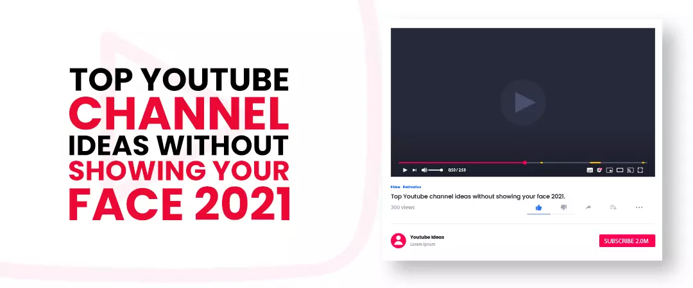
Tutorials
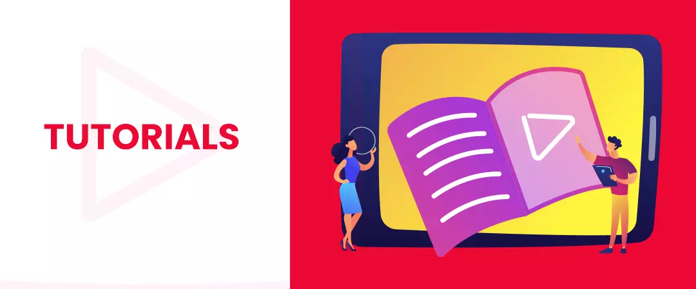
According to Think with Google, Searches of “how-to” videos on YT are growing 70% year over year. Tutorials can be explaininga topic, theme, subject, issue, question, orideology, or just a guide on how to do/use a particular product/service. They are great examples of evergreen content.
For example, if you were teaching a botanical or physicsperception today, it would remain the same tomorrow and for even a few years to come. The fundamental concepts of physics & botany are not going to change in a blink of an eye! Because it’s not a trend, that can be ‘Gone with the wind’ it’s a concept-A basic & basis of reality!
The idea here is to create tutorials explaining products, concepts, notions and philosophies which do not involve showing your face in the video. One of the best YT channels that is having great success with how-to’s is 5-Minute Crafts.
Now, let us assume, you are a teacher and have to explain mathematics formulas. You can explicate chapters in a book or on your laptop’s screen. You can use a screenshot of the documents and emphasis that though you express or use a PowerPoint presentation with snippets of transcripts.
For creating tutorials, you can use Camtasia Studio.
You can create tutorials about:
-
How to install software online
-
How to download an app
-
How to fix network/software/any sort of issue
-
How to order a product from your site
-
How to use your product/service
-
How to sort any problem
-
And fundamentally, how to do anything online.
-
How to assemble a product
-
How to cook, craft, garden, take care of a child, teach children conducts.
These are some of the best engaging YT videos you can make and by simply focusing on your camera on the product, toy, book or screen.
Customer Testimonials and reviews
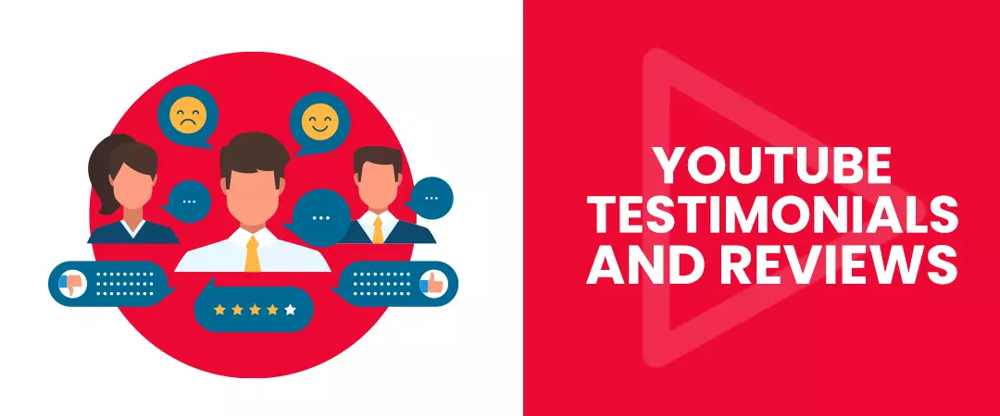
Another video type, when you consider blogging without showing your face is representing testimonials. Brands can increase their sales, revenue, credibility, advocacy and leads with the help of this promotion YouTube marketing strategyapt for small businesses. All you need to do is feature a happy client providing positive feedback about your merchandise. Just record the footage on your android or use a camera. Statistics show that 62% of businesses use YT as a channel to post video content (Buffer, 2019) and 90% of people say they discover new brands or products on this platform (Think with Google)
Then next you have an option of employing reviews in your face-less video content. You may review software you purchase or buy, home appliances, make-up kits, soaps, beauty products, or whatever gadget/service you want. According to Google, 74% of users who watched an explainervideo about a product subsequently bought it.
This can be fun and can be used to get conversations manipulated in your favor.
Screen Recordings
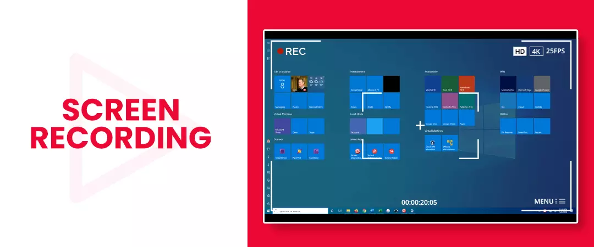
They are simply great to represent an audience, a procedure, or how to use particular software or to literally see what it’s like to use your product. You can use software like Camtasia or ScreenFlow for Macs and record your screen and just narrate the whole story as you represent the audience how you do something on the computer.
Gaming Videos
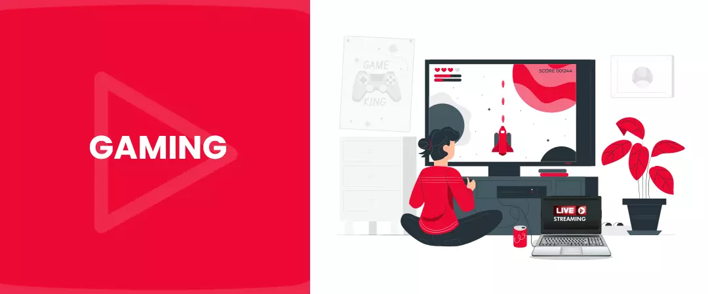
Live streaming of games to this platform are another great example of, how to record a video without showing your face. Principally, you can start playing a game and live stream your screen to YT. Just as simple as that!These videos use the same process as screen recordings, to be index on your channel.
There are many successful YouTubers who are earning great with gameplay videos. PewDiePie with 27,188,289,188 video views and FGTeeV with 19,564,393,389 views both are from the list of most-viewed channels on this platform! In fact, PewDiePie is the Youtuber with the greatest number of subscribers.
You can otherwise record a video game and then upload that to this platform.
Make sure to check the copyright laws for the assignment.
Animation
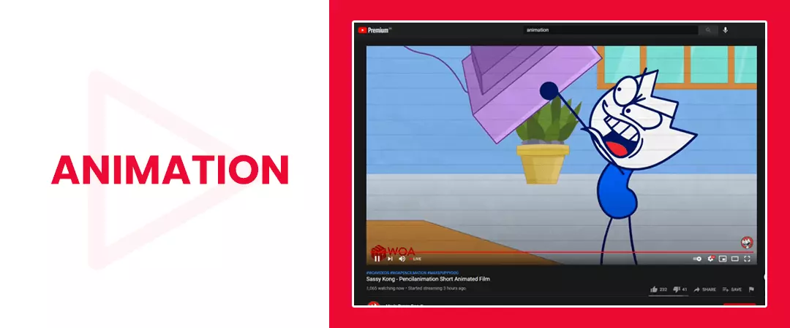
YouTube is jam-packed with animations of Book reviews, product tutorials, testimonials, reviews, &educational content. Now, let us assume you want to make an animated video of a book. First, you need to read the book. Then scribble down the important arguments or concepts sheltered in it. Storyboarding is one of the key practices when comes to, blogging without showing your face.All you need to do isabstract as much info as you can from the book to project the concepts to design a storyboard. And then explain these concepts effectively.YouTuber AndreaRoman has grown her channel to over 175k subscribers creating inspirational animated videos that do not show her face. Another example of an animation YT channel is CGP Grey, this channel has 4 million subscribers!
Even, Susan Wojcicki CEO of YouTube, which has 2 billion monthly users leverage this type of video content some time ago, it was her reading a script, and the whole visual was animations. Animations, unambiguouslyexpressing the story of what she was explaining.
You can use animation tools like Adobe Animate. You can also hire animators on Upwork or Fiverr to help you with creating the animation if you want.
Presentations.
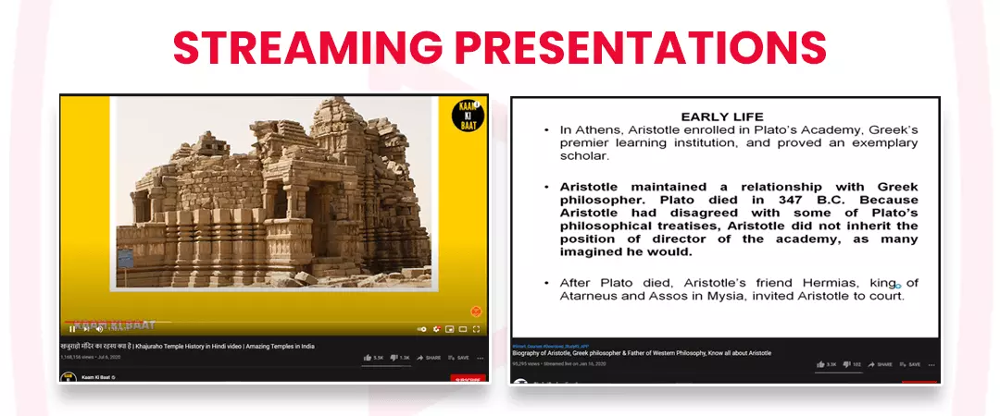
Leveraging screen recordings methodsis another way to knowhow to record a video without showing your face. It requires using information slides or photographs as your graphics and conversate with the content in your presentation. All you need to have is software like PowerPoint, Keynote, or Canva to create anattractive presentation. You can create a PowerPoint presentation and represent the slideshow or use screen capture software to capture the screen and then explain the slides. Using PPT you can insert images, graphics, animations, &analytics, to demonstrate a concept.
To record a presentation using screen recording software, you can leverage ScreenFlow or Camtasia. Also, there are lots of free browser plugins that also record the screen that you can use easily.
You can also leverage Google Slides to create eye-catchy presentations cost-free!
Without featuring your face on camera, you can add as much temperament as you want to engage your audience. The art of employing fascinating images, photography, and videos which convey stories can undoubtedly speak for themselves sometimes.
Product demonstrations
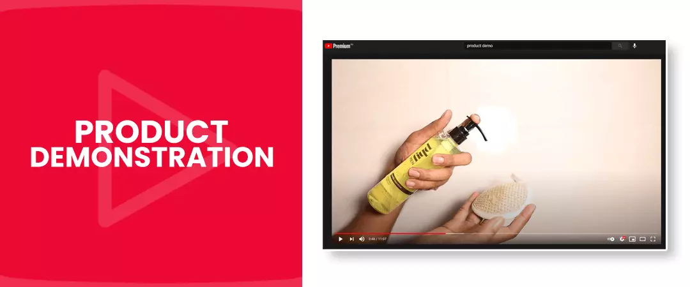
According to Google, adding a product video on your landing page can increase conversions by 80%, you need not show your face when showcasing a product in your video. You can focus on the different angles of the product as you demonstrate it and you can only use your hands to show its features and how to use it. They are highly effective video content when comes to tech gadget reviews, and brands are also using the same to increase their market value.
Inventory
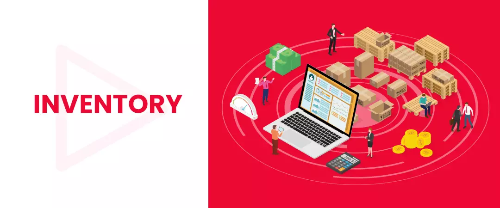
You can use stock images and stock videos as the graphics in your video, as you talk to a script or content. You can create listicles that highpoint your products or services. Videos that represent the list in a slideshow-sequel format, typically with music playing in the background are called listicles. Video listicles can breathe new life into YT marketing strategy as a true marketing approach. Ponder using video listicles to showcase variety by providing your target audience with the systematized content they want. This may sound tedious, but a lot of Podcasters use this as a method of repurposing their audio to this platform, and it’s more appealing than you may believe.
You can use your own product catalog or Getty Images, which are expensive but has gorgeous images. There is also a free stock reference library, and royalty-free video sites such as Storyblocks that have video footage you can purchase for creating your videos.
Also, you need to know, there are thousands of successful faceless YouTube channelsthat create videos by combining existing videos or images.
For example, the successful YT channel “Spill Sesh” is a chatter channel with 571k subscribers. She never appears on camera herself, but solely delivers commentary while playing snap shorts and screenshots from other YouTuber’s fresharrivals.
You can also extrapolate points, make mini graphs as well.
Live commentary for an event
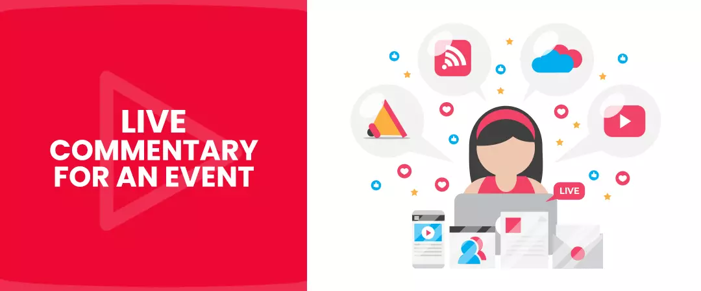
Another type of YT video that grabs audience attention and does not require including your face is live commentary during live events (like sports/webinar/event).
Podcast
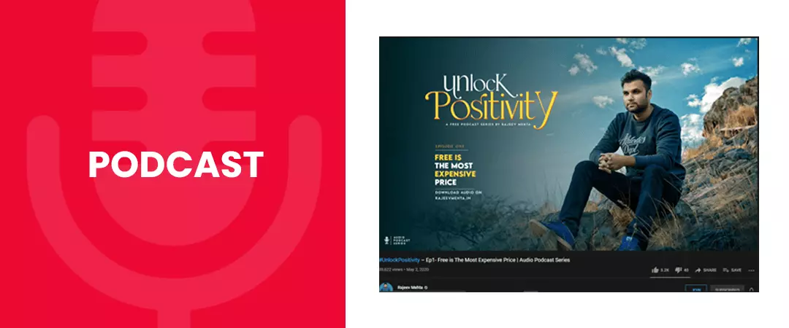
Another stimulating way to make videos without being on camera is by using a podcast with only a static image as the graphic.
A prodigious example of this would be The Tim Ferriss Show podcast episodes. A decent podcast can keep theaudience engaged, and will use this platform to search for your episodes and can play them in the background.
Cooking
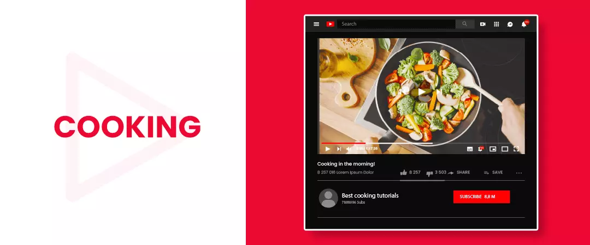
You can start a cooking channel & make money by growing food YouTube channel. In which you can share the Cooking Tips & Tricks or tell how to make new dishes on your channel. It’s a great video idea for YouTube without showing your face.
To capture a cooking-related video you can use your phone or camera with a stable tripod in which you can mount it and connect to the mic.
Other Ideas for No face Videos
-
Music Videos
-
Showcase your crafts, or photos
-
Explainer videos
-
Movie Reviews
-
Thought leader interviews
-
Point of View Videos
-
DIYs
-
Office/home tour
-
Behind the scenes video
-
Product unboxing
-
Motivational video
The Software you can use to make “No Face” videos
To share your knowledge without showing face, you can use the following software:
Camtasia Studio
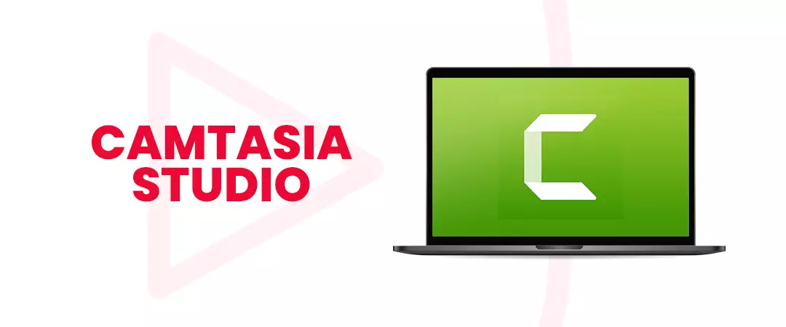
Use this paid software to create video tutorials and presentations via screencast. This tool also helps you to record your PowerPoint presentations. It helps you to record a segment of the screen or the entire screen or one window. Afterward, you can record audio, or add in music files/voice notes.You can also use, Freemium tools (Premium version are also available) like; Camstudio, ezvid, iSpring Free Cam, FFsplit, or Screencast-O-Matic.
Text to Speech
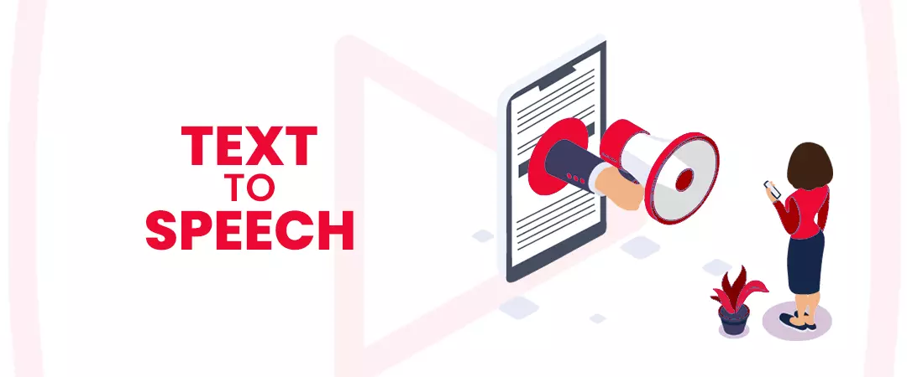
This software can convert text to speech therefore it is called tts software. You can use this tool to convert text documents, web pages and pdf files.
This is an incredible program for a visually impaired segment of audience.
Whiteboard Animation
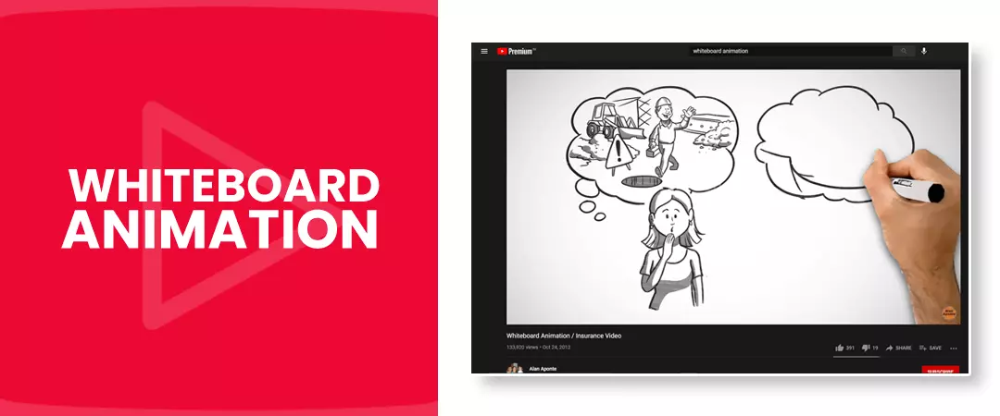
Use this tool to create a storyboard. The video produced includes inscription and narration.
Fun fact- Who is the biggest faceless YouTuber?
Corpse Husband (born August 8, 1997), also known as Corpse (formalized in all caps as CORPSE), is an American internet personality and musician, who is best known for his faceless work on this platform!
I hope you found this guide helpful to know, the best Youtube channel ideas without showing your face in 2021.
Feel free to share!